|
BoHub CRMManual de usuario
| ||||||||||||||||||||||||||||||||
|
Bomedia · uso internosoporte: eduard@bomedia.net
| ||||||||||||||||||||||||||||||||
|
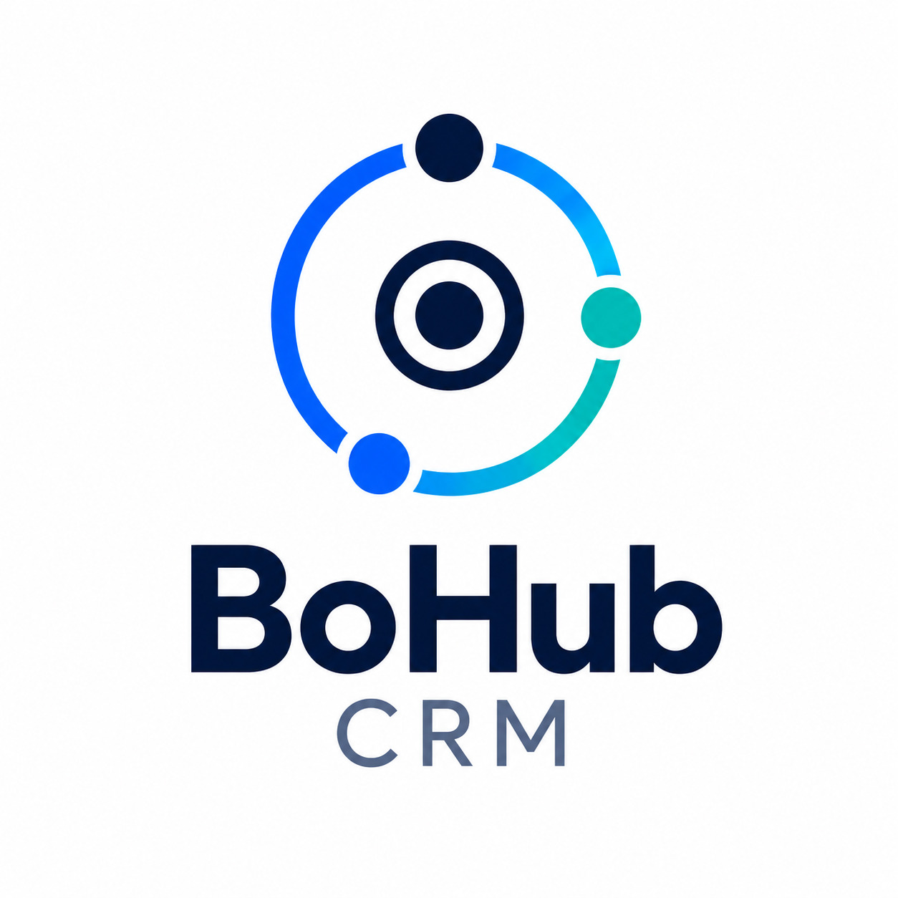 Guía de equipo · Bomedia Manual de
|
| Rol | Qué puede hacer |
|---|---|
| Comercial | El rol más común (user). Gestiona sus propios contactos, manda emails y completa tareas. |
| Manager | Comercial + puede ver y gestionar el trabajo de otros del equipo (cubrir vacaciones, supervisar). |
| Admin | Configuración completa del CRM: usuarios, integraciones, reglas y backups. |
Primeros pasos
2.1 · Login
Abre https://bo-crm.mbolasers.com → introduce email + contraseña → entra al Dashboard.
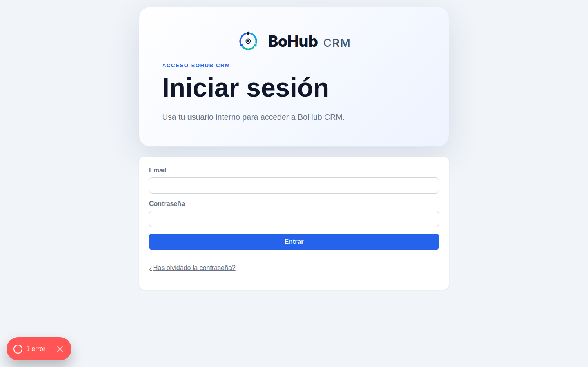
2.2 · Configurar tu cuenta personal
Click en tu avatar arriba a la derecha → Mi cuenta (o /account). Aquí configuras:
- Tu perfil: nombre, email, contraseña.
- Google Calendar: conecta tu cuenta de Google para sincronizar tareas como eventos.
- Gmail (envío de emails): conecta tu cuenta Gmail para enviar emails desde el CRM con tu propia dirección. Tras conectar, en el selector de aliases marca con ⭐ tu alias predeterminado y selecciona los demás aliases que quieras tener disponibles.
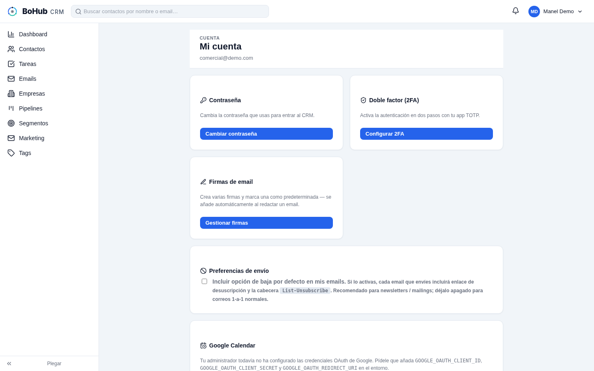
2.3 · Entender el sidebar lateral
Las opciones del sidebar dependen de tu rol:
| Visible para todos | Admin / Manager | Solo Admin |
|---|---|---|
| Dashboard, Contactos, Tareas, Emails, Empresas, Pipelines, Segmentos, Marketing, Tags | Workflows, Reglas de asignación, Custom fields | Integraciones, Usuarios, Backups, Ajustes |
Tu día a día como comercial
3.1 · Dashboard
Al entrar ves tu pantalla principal. Muestra KPIs personalizados con periodo configurable (3d / 1sem / 15d / 30d / custom):
- Tus contactos nuevos en el periodo.
- Tus tareas vencidas y para hoy.
- Tus emails enviados / abiertos / clicados.
- Tu pipeline de oportunidades.
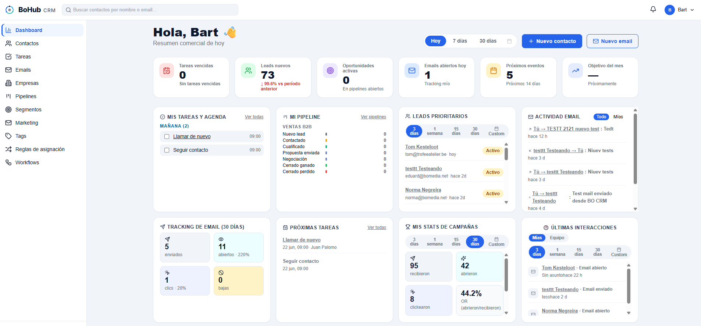
3.2 · Contactos
Listar contactos
En /contacts ves la lista de contactos del CRM con buscador por nombre/email, filtros avanzados (tag, score, estado del ciclo, propietario, campañas Brevo…) y columnas personalizables.
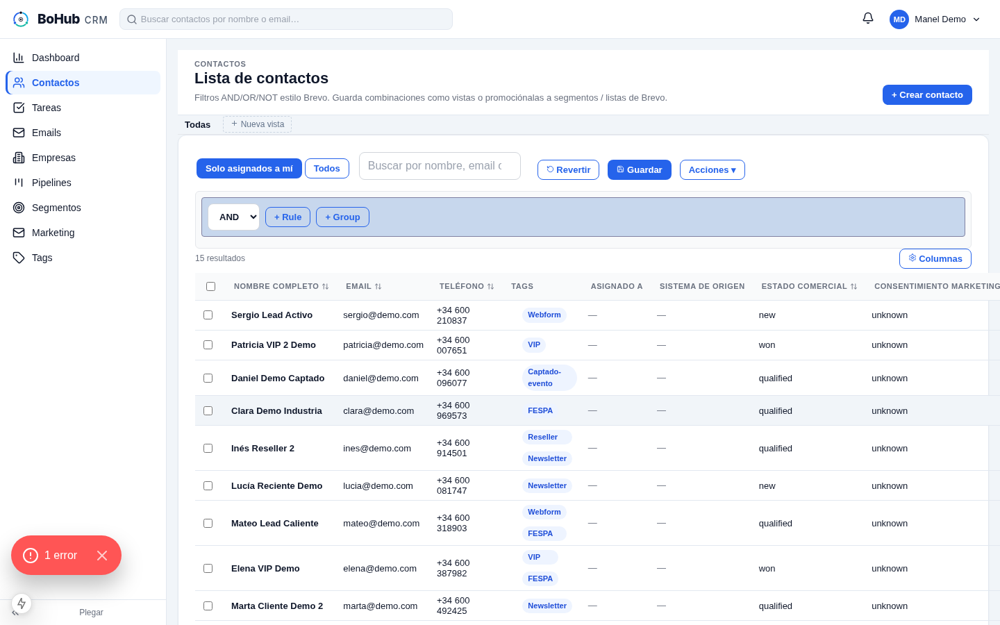
Ver una ficha de contacto
Click en cualquier contacto. La cabecera reúne nombre, email, teléfono, empresa, origen del lead, última actividad, lead score, estado del ciclo y estrellas (1–5). Debajo, las pestañas:
- Resumen: actividad reciente, engagement de emails, tareas, notas, tags, oportunidades y engagement Brevo.
- Actividad: timeline completo de eventos.
- Emails: hilos de conversación con el contacto.
- Tareas, Notas, Tags, Oportunidades: gestión asociada al contacto.
- Workflows: workflows activos e históricos.
- Soporte: tickets (cuando la integración Freshdesk esté lista).
La sidebar derecha muestra información profesional, dirección, empresa asignada y comerciales asignados (primary + secundarios).
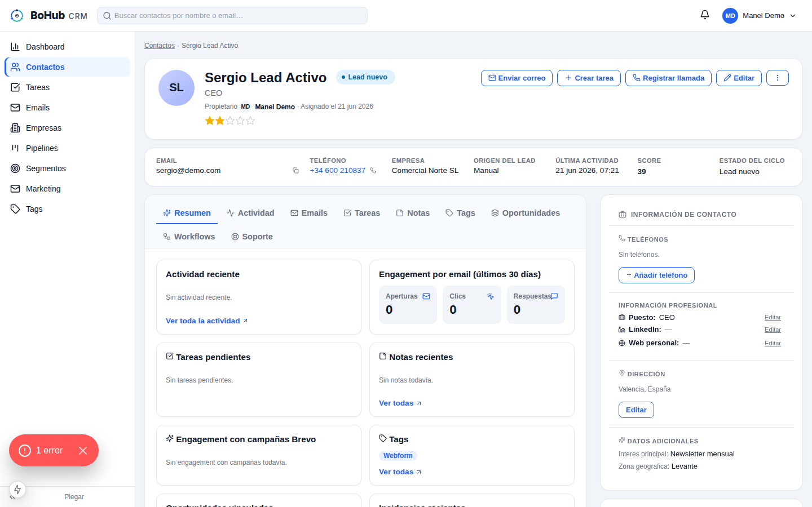
Crear contacto manualmente
Click «Nuevo contacto» en /contacts. Nombre y email son obligatorios. El origen se rellena como «Manual» (no editable) y el propietario se asigna al user que lo crea.
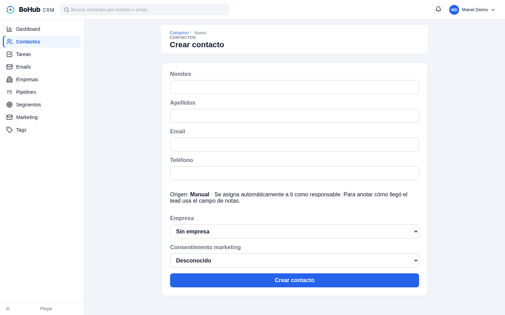
Editar contacto
Botón Editar en la cabecera → modal con todos los campos: nombre, email, empresa, teléfonos (múltiples), propietario, custom fields, estrellas, lead score y dirección.
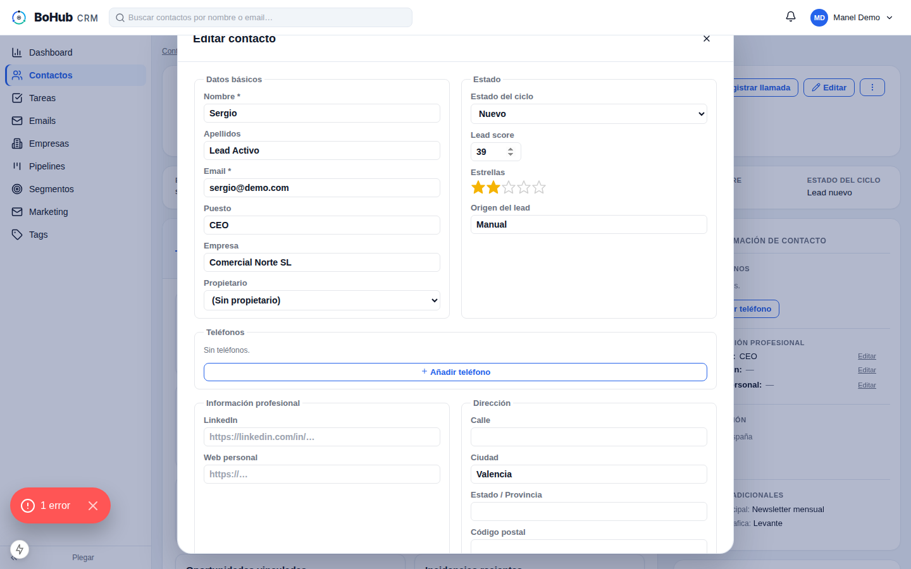
Borrar contacto (solo admin / manager)
Botón ⋮ en cabecera → «Borrar contacto» → confirmación tecleando «BORRAR» → eliminación definitiva con cascade en tareas, notas y asignaciones. Los emails se preservan con contact_id=NULL.
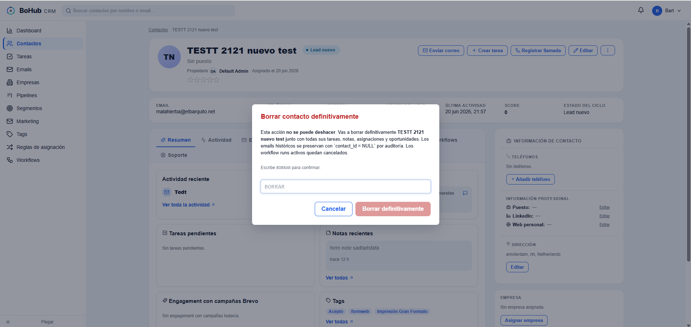
3.3 · Emails
Enviar email
Desde la ficha del contacto, botón «Enviar correo» → se abre un panel derecho con el composer. Opciones:
- Modo plantilla: elige una plantilla del CRM; el asunto se rellena solo y puedes sobreescribirlo.
- Modo contenido personalizado: escribes asunto + cuerpo HTML libremente.
- From alias: alias fijo, alias predeterminado del propietario (recomendado, el ⭐) o un alias específico del propietario.
- Variables:
{{contact.first_name}},{{contact.last_name}},{{contact.email}}… se rellenan al enviar. - Firma, adjuntos, programar envío e incluir opción de baja (enlace de unsubscribe).
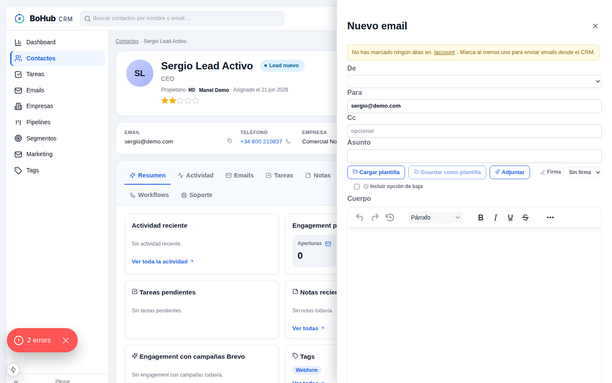
Bandeja de emails
En /emails, vista de 3 columnas: carpetas (Bandeja, Estrellados, Archivados, Papelera, Spam, Programados, Borradores, Enviados, personalizadas) a la izquierda; lista de hilos con filtros en el centro; y el hilo seleccionado a la derecha. Filtro adicional Míos / Todo el equipo / Todos los comerciales. En móvil el layout pasa a stack vertical.
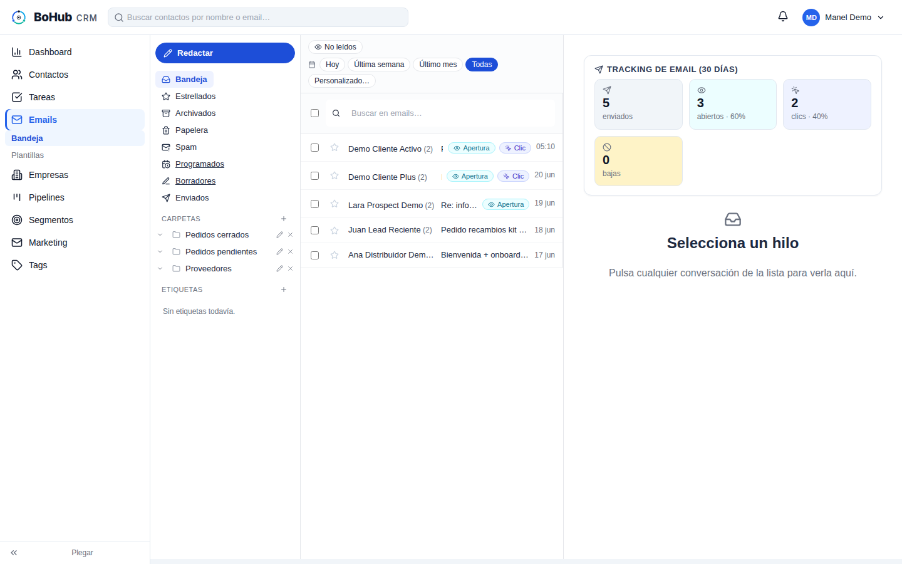
Responder / reenviar y tracking
Click un hilo → en el panel derecho tienes «Responder», «Responder a todos» y «Reenviar». Los emails enviados desde el CRM llevan tracking automático: apertura ✉️, clic 🔗 y respuesta 💬. Los contadores aparecen en cada email y en el widget «Engagement por email» de la ficha.
Hay una ventana de 30 segundos post-envío para evitar contar tu propio reflejo en la bandeja «Enviados» del remitente.
3.4 · Plantillas de email
Las plantillas las gestiona el admin desde /marketing. Tú las usas al componer seleccionando «Modo plantilla». Para crear una rápida: en el composer escribe → «Guardar como plantilla» → nombre + folder → guarda.
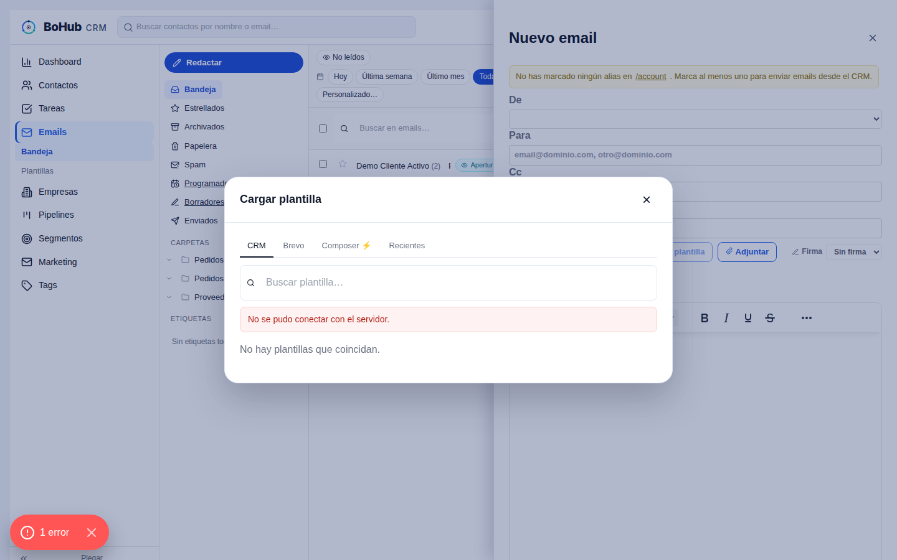
3.5 · Tareas
Crear tarea desde la ficha
Botón «Crear tarea» en cabecera → modal con título, descripción, vencimiento (relativo: «en 2 días a las 11:00»), prioridad (baja / media / alta) y la opción «Sincronizar con Google Calendar del propietario», que crea el evento en Calendar.
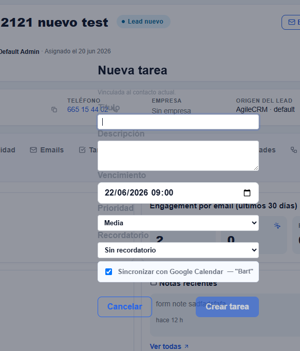
Ver tus tareas
En /tareas, vista con tabs: Pendientes hoy, esta semana, Vencidas y Completadas. Click en una tarea para ver detalle, completarla, editarla o posponerla.
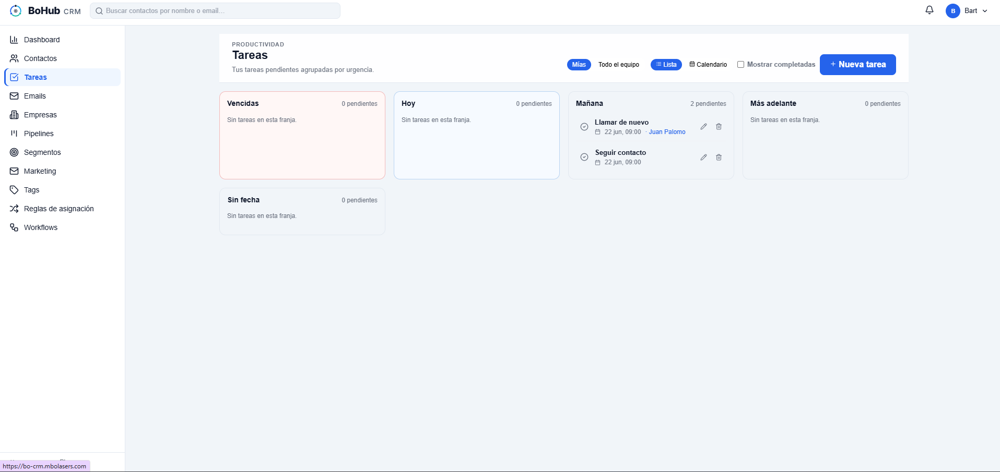
3.6 · Notas
Pestaña «Notas» en la ficha → «Nueva nota» → texto plano → guarda. Son privadas del equipo (no se envían al contacto). Útiles para apuntar info de una llamada o contexto de un cliente.
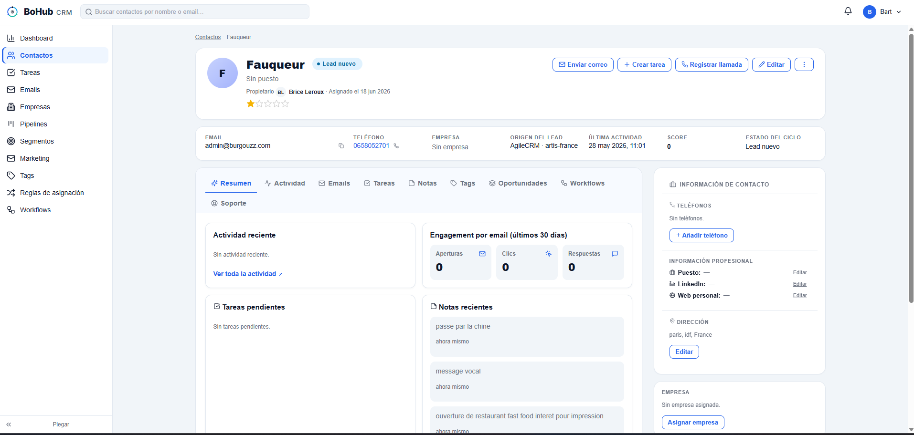
3.7 · Tags
Pestaña «Tags» en la ficha → añadir/quitar tags. Son etiquetas reutilizables del CRM (FESPA, cliente-pro, interesado-demo…) que el admin gestiona desde /tags.
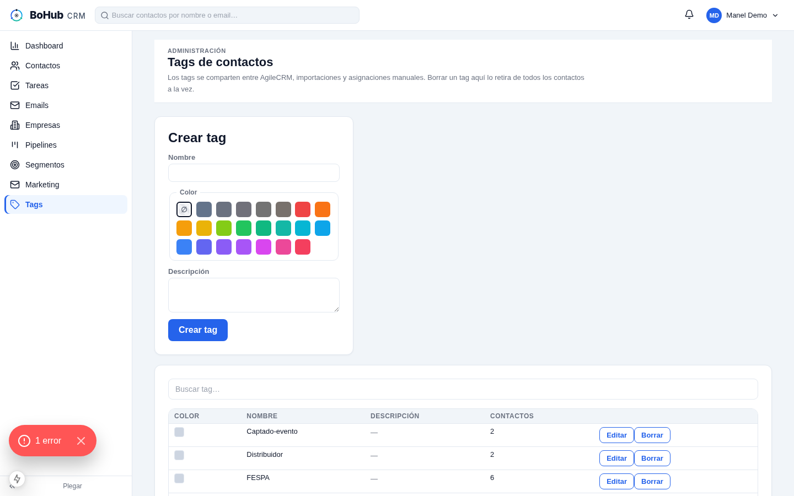
3.8 · Oportunidades
Pestaña «Oportunidades» → «Nueva oportunidad»: nombre, valor estimado, pipeline (ej. «Ventas B2B»), stage inicial (Nuevo, Calificado, Propuesta enviada, Ganada, Perdida) y producto asociado. Mueves la oportunidad de stage según avanza y marcas ganada/perdida con motivo al cerrar.
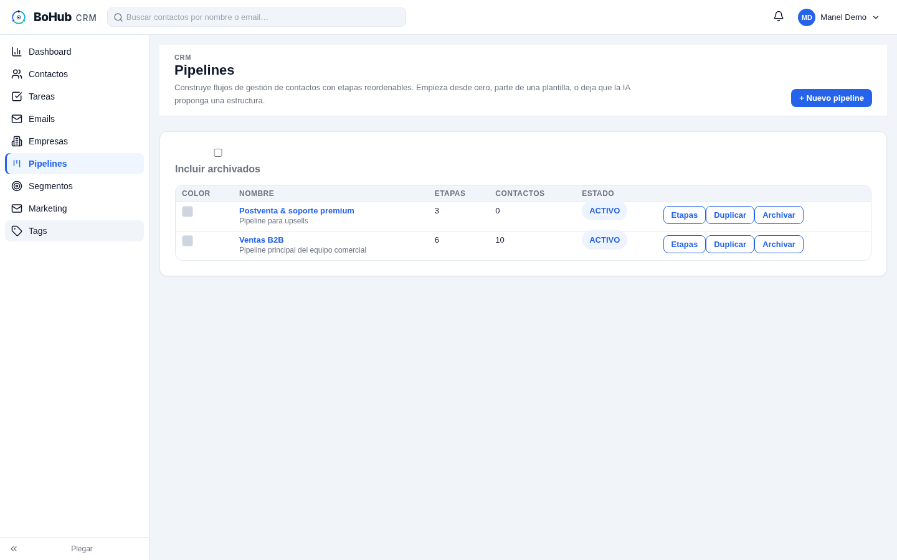
3.9 · Pipelines
En /pipelines, vista kanban de todas las oportunidades por stage. Arrastra y suelta para mover entre columnas.
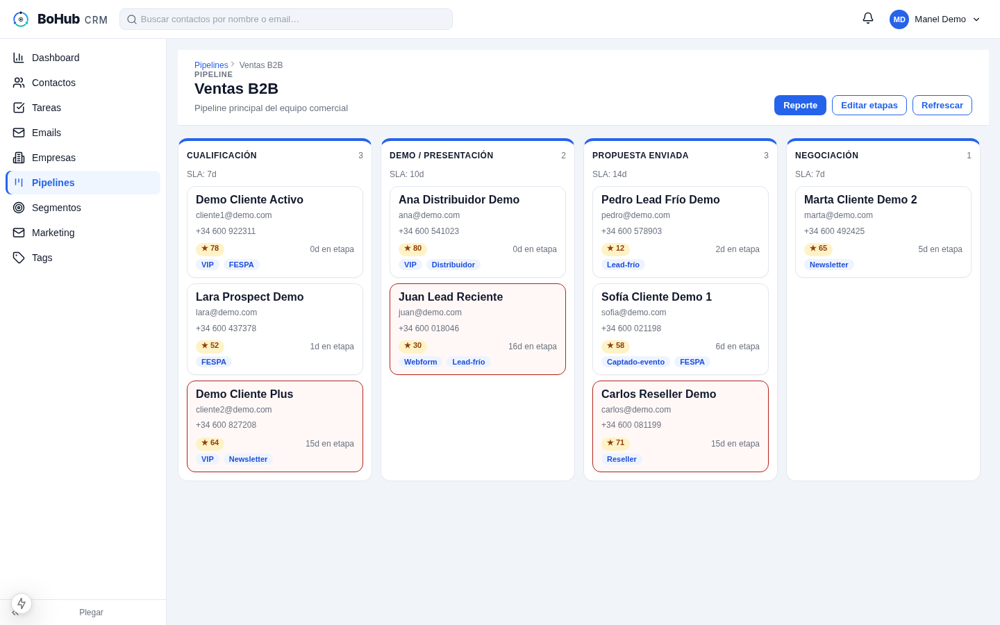
3.10 · Segmentos
En /segmentos, grupos dinámicos de contactos que cumplen ciertos criterios (ej. «clientes que abrieron campaña X en 30 días»). Se actualizan solos al entrar/salir un contacto del criterio. Útiles para dirigir campañas Brevo o workflows.
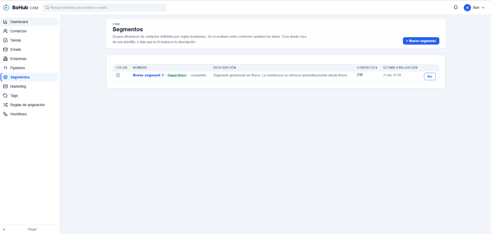
Workflows (automatización)
Los workflows son recetas automáticas: «cuando pasa X → haz Y → espera Z → si abrió el email A, si no B».
4.1 · Lista de workflows
En /admin/workflows ves todos los workflows con su trigger, estado (active / paused / draft) y contadores (en ejecución / total / ganados). Acciones por workflow: editar, duplicar, archivar, pausar/reanudar y borrar.
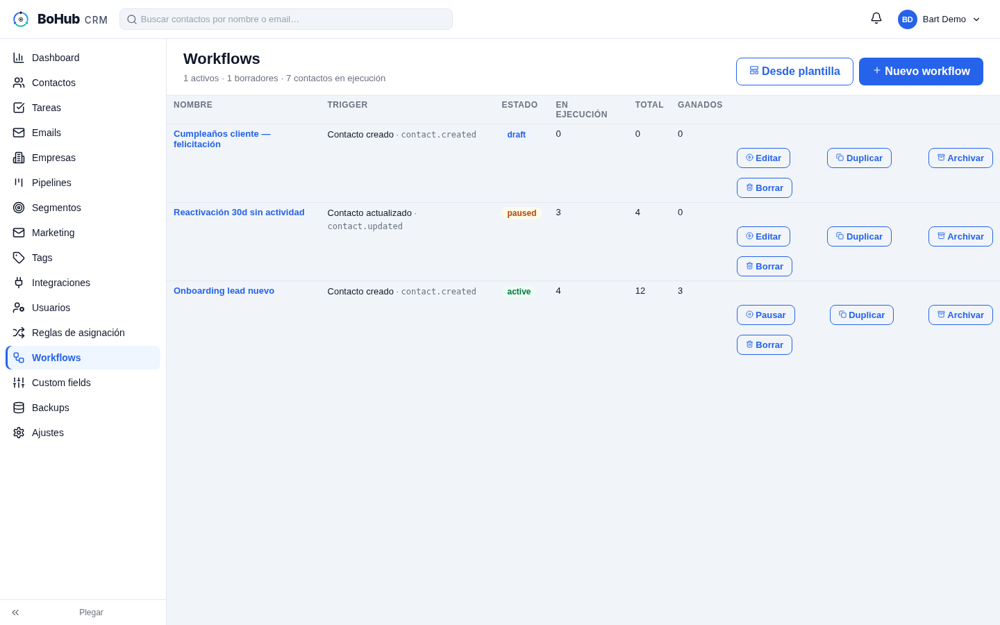
4.2 · Crear desde cero o desde plantilla
«Nuevo workflow» abre un editor canvas drag-drop: catálogo de pasos a la izquierda, canvas en el centro y configuración del paso a la derecha. «Desde plantilla» abre una galería con recetas predefinidas (Onboarding lead, Cumpleaños, Follow-up presupuesto) → «Usar plantilla» clona en draft para editar.
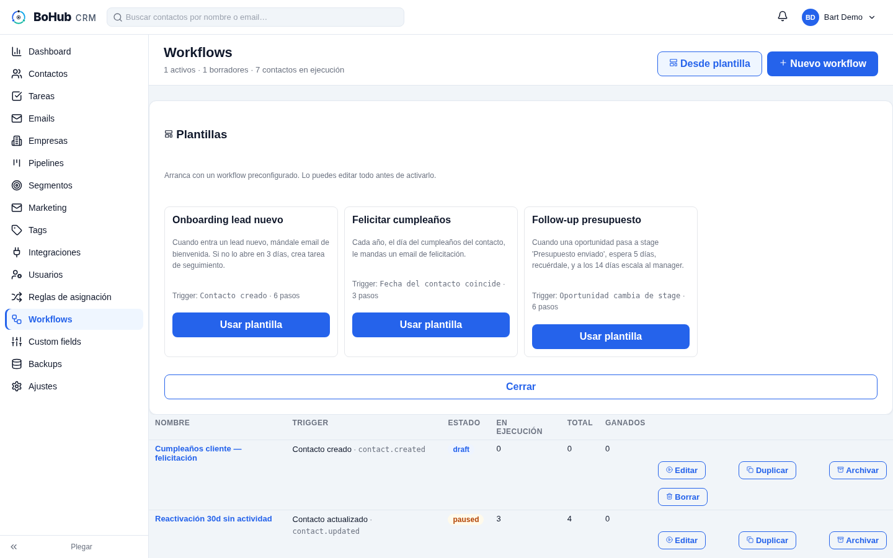
4.3 · Construir un workflow
- Define el trigger: evento posible (Contacto creado, Email abierto, Tarea completada…) + sub-config.
- Filtro adicional (opcional): condiciones extra sobre el contacto con el FilterBuilder.
- Añade pasos arrastrando del panel izquierdo al canvas.
- Conéctalos arrastrando una flecha desde el handle inferior de un paso al siguiente.
- Condición if/else: 2 handles «Sí» (verde) y «No» (rojo), cada uno a su rama.
- Esperar evento: 2 handles «matched» / «timeout».
- Termina con un paso Salida (natural, ganada, perdida).
- «Probar» para simular sobre un contacto real sin ejecutar.
- «Estimar» para ver cuántos contactos cumplirían el criterio.
- «Activar» cuando todo esté validado.
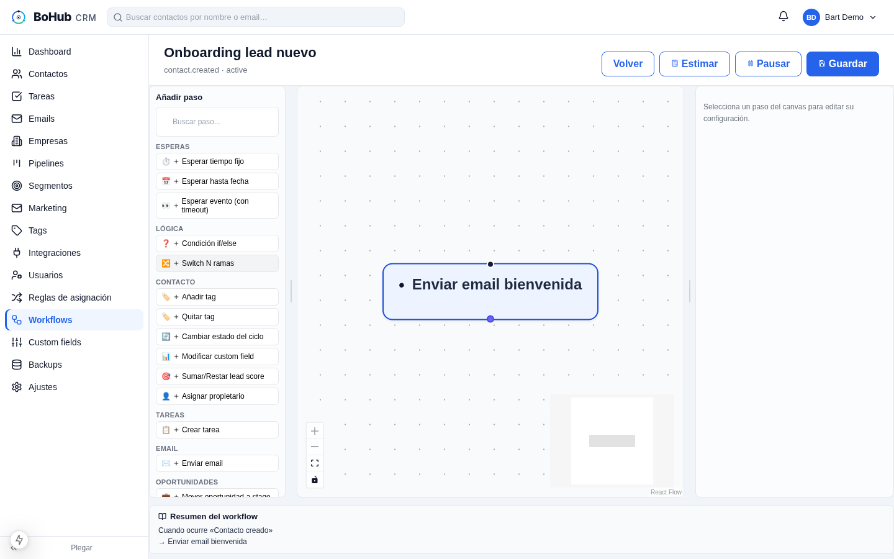
4.5 · Ver runs de un contacto
Ficha del contacto → pestaña Workflows: workflows activos (running / waiting), histórico (completed / cancelled) y, al hacer click en un run, un timeline detallado con cada paso ejecutado y su status.
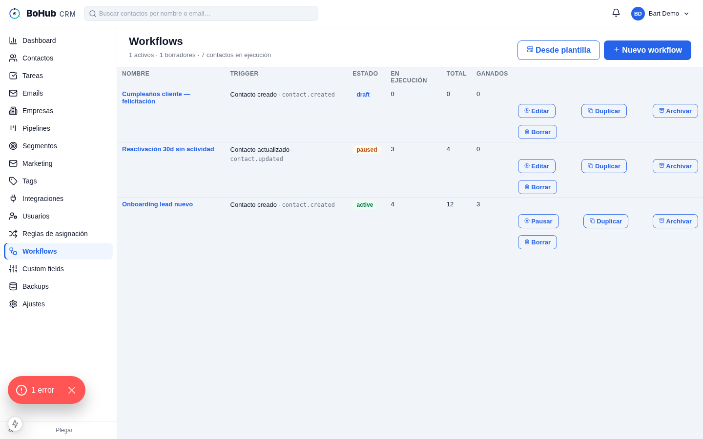
4.6 · Reglas de asignación
En /reglas-de-asignacion, reglas más simples que los workflows: «cuando entra un contacto que cumple X → asígnalo al comercial Y». El motor ordena por prioridad y aplica la primera que matchee. Útiles para distribuir leads por origen, tag o condición.
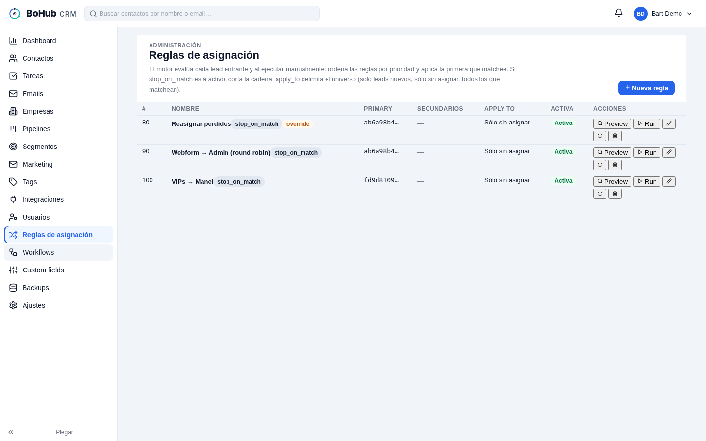
Marketing y campañas (Brevo)
En /marketing, la integración con Brevo gestiona listas de emails, campañas masivas, templates de Brevo y estadísticas (aperturas, clics, bounces, unsubscribes) por campaña. El CRM importa las campañas y eventos de Brevo periódicamente; cada apertura/clic se asocia automáticamente al contacto.
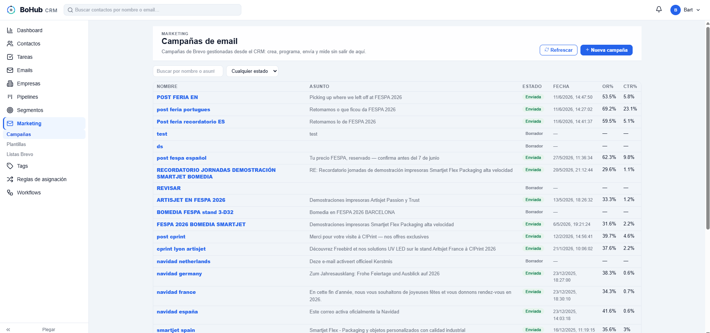
Para managers
Todo lo del rol comercial, más permisos adicionales:
- Ver los workflows que afectan a contactos de tu equipo.
- Selector «Ver bandeja de [user]» en
/emailspara cubrir vacaciones. - Asignar / reasignar contactos entre comerciales.
- Ver tareas de cualquier user del equipo con filtro per-user.
- Editar reglas de asignación del equipo.
- Crear y editar workflows del equipo.
Para admins
| Área | Qué se gestiona |
|---|---|
Usuarios /admin/users | Crear, editar, desactivar usuarios. Asignar roles. Resetear contraseña. |
| Custom fields | Campos personalizados del contacto (texto, número, fecha, dropdown), filtrables en segmentos y workflows. |
| Reglas de asignación | Igual que managers + ver reglas de todos los equipos. |
| Workflows | Crear, editar y archivar todos los workflows del sistema. |
| Integraciones | AgileCRM (9 cuentas, sync 1h), Brevo (API key, campañas), FactuSOL y Freshdesk (lectura). |
| Backups | Backup automático cifrado cada 72h (configurable), descargable y restaurable. |
| Tags | Crear, renombrar y fusionar tags para mantener limpio el catálogo. |
| Ajustes generales | Nombre de empresa, branding, idioma por defecto, etc. |
FAQ y troubleshooting
Hay una ventana de 30 segundos post-envío durante la cual no se cuentan aperturas (para no contar tu propio reflejo en Gmail «Enviados»). Espera 1–2 minutos y comprueba de nuevo. Si sigue en 0, el destinatario aún no ha abierto.
Ve a /account → sección Gmail → marca al menos un alias visible (estrella ⭐ en el predeterminado).
Verifica que el workflow está en estado active (no paused ni draft). Si lo está, mira en /admin/workflows → fila del workflow → ¿subió el contador «EN EJECUCIÓN» o «TOTAL»?
En /emails cambia el filtro a «Todo el equipo» o «Todos los comerciales». O abre la ficha → pestaña Emails (siempre muestra todos los emails del equipo).
Ve a /account → Gmail → «Desconectar» → «Conectar» → escanea de nuevo. Tu admin debe tener publicada la app OAuth en producción para que el token dure ilimitado.
En /contacts usa el filtro «Archivados» → busca el contacto → botón «Restaurar».
Solo admin/manager. Botón ⋮ en la cabecera de la ficha → «Borrar contacto» → teclea «BORRAR» → confirma. Acción irreversible.
El sync corre cada 1h. Si esperaste >1h y aún no llega, contacta a tu admin para verificar el scheduler.
En /admin/integrations cada integración muestra status (verde/rojo) y la última sincronización exitosa.
Atajos útiles
/contacts, configura un filtro complejo → guárdalo con nombre para reutilizarlo./contacts, selecciona varios contactos → acciones masivas (cambiar tag, asignar owner, exportar CSV).Soporte interno
¿Un bug o necesitas algo del CRM?
Escribe a tu admin en eduard@bomedia.net. Incluye, si puedes, una captura y los pasos para reproducir el problema.
Última actualización: 21 jun 2026 · Versión del CRM en producción: v1.x